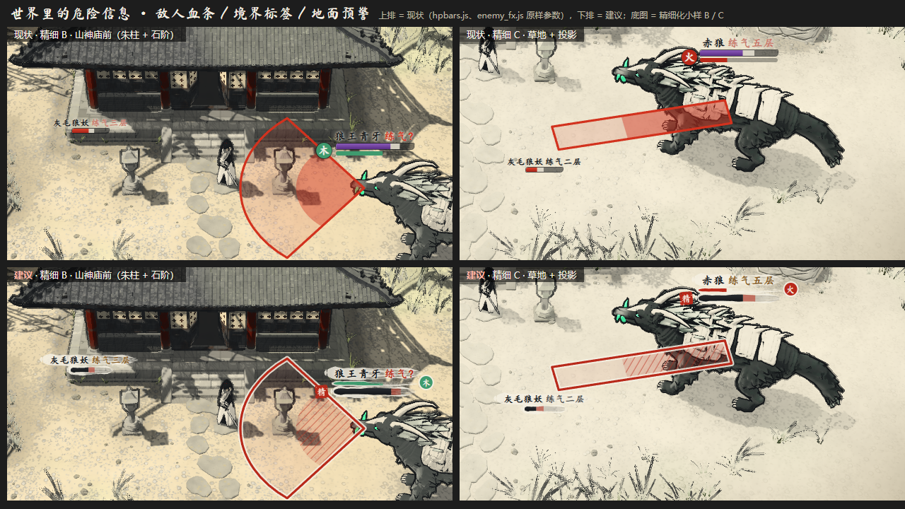

<!doctype html>
<html lang="zh-CN"><head><meta charset="utf-8"><title>墨途 · UI 体检 v1（精细化场景下的 HUD 可读性）</title>
<link rel="stylesheet" href="common.css"><script src="hud.js"></script>
<style>
body { width: 1900px; }
.g4 { grid-template-columns: 130px repeat(4, 430px); }
.g3 { grid-template-columns: 130px repeat(3, 560px); }
.top5 { display: grid; grid-template-columns: repeat(5, 1fr); gap: 12px; margin: 10px 0 4px; }
.top5 div { background: #333; padding: 8px 12px; border-left: 4px solid #b8291a; font: 13px/1.6 var(--f-ui); color: #ddd6c2; }
.top5 div b { display: block; font: 17px var(--f-display); color: #f5f0e3; margin-bottom: 2px; }
.top5 div.mid { border-left-color: #b8923a; }
.q { background: #333; padding: 10px 14px; margin: 8px 0; font: 14px/1.7 var(--f-ui); color: #ddd6c2; max-width: 1840px; }
.q b { color: #f5f0e3; }
.q .rec { color: #ffb4a4; }
</style></head>
<body><div class="page" id="root"></div>
<script>
const S = TJ;
const head = (t, s, href) => `<div class="rowhead">${t}<small>${s}</small>${href ? `<small><a href="${href}">单独打开 ›</a></small>` : ""}</div>`;
const cap = (t) => `<div class="cap">${t}</div>`;
let h = `<h1>UI 体检 v1 · 精细化场景下的 HUD 可读性</h1>
<p>底图：现状游戏场景 / 美术精细化小样 B（水墨写意）/ C（写实），都是 <code>docs/art/精细化小样_v1/png/*_game.png</code> 抹掉左上标题后的原图；HUD 按 <code>src/ui/hud.js · runhud.js · skillbar.js · hpbars.js</code> 的原参数复刻。完整问题清单与实测对比度见 <a href="体检报告.md">体检报告.md</a>。</p>
<div class="top5">
 <div><b>① 气血条是黑的</b>和气势条同色同形、和首领气血同色；风格指南定的是朱。来源：设计文档 v0.3"两道墨痕"，指南迁移时漏了 hud.js。</div>
 <div><b>② 残血没有任何警示</b>指南 §6.1 的"受伤时屏幕边缘晕开淡朱墨"没做；血条也没有低血状态。</div>
 <div><b>③ 真气条对比度不够</b>#3f8fa8 在墨晕底上实测 P10 2.3–2.5、中位 2.9–3.2，图形元素要 ≥ 3:1。</div>
 <div><b>④ 小字在精细化底图上掉到 1.1–2.6:1（P10）</b>天时、镜下方位、机缘、技能"解锁"、境界小字；背景纹理强度涨了 3–40 倍。</div>
 <div class="mid"><b>⑤ 世界里的朱与红撞色、方框</b>敌人血条红 + 紫（精英）+ 圆角框；预警圈纯红无纸色外描，靠朱柱 / 投影时糊。</div>
</div>

<h2>一 · 气血 / 真气 / 气势（2–3 个方向 × 三种底图）</h2>
<p class="note">每格是同一屏左上角的原大裁切。前三列"受击"（气血 62%，焦墨 / 淡朱余迹在 62–80%）；第四列是最坏情况：B 底图压暗 45%（夜的示意）+ 残血 24%（新方向带屏幕四缘淡朱墨）。点行首"单独打开"可切底图 / 状态。</p>
<div class="grid g4">
 <div></div>${cap("现状场景 · 受击")}${cap("精细 B · 受击")}${cap("精细 C · 受击")}${cap("精细 B · 夜（示意）· 残血 24%")}`;
const VT = [["now", "现状", "hud.js：黑血、青气、黑势；矩形纸底", "a_zhumo.html#d=now"], ["a", "甲 · 朱墨两笔", "推荐 · 指南原样：朱血 / 深石青气 / 墨势；墨晕底", "a_zhumo.html"], ["b", "乙 · 印记", "标签换成血 / 气 / 势三方小印，条加粗", "b_yinji.html"], ["c", "丙 · 墨血转朱", "满血仍是墨（保留 v0.3「墨痕」），五成起转朱", "c_moxue.html"]];
for (const [d, t, s, href] of VT) {
  h += head(t, s, href);
  h += S.cell({ d, bg: "old", st: "hit" }, 430, 146) + S.cell({ d, bg: "B", st: "hit" }, 430, 146) + S.cell({ d, bg: "C", st: "hit" }, 430, 146) + S.cell({ d, bg: "B", st: "low", night: true }, 430, 146);
}
h += `</div>
<p class="note">要点：①现状的黑血对比度最高（实测 P10 7.3），问题不在"看不见"，而在"分不清"——气血与气势同一种焦墨笔、上下相邻，首领条的气血也是墨，玩家扫一眼读不出哪条是命；②矩形纸底在竹林 / 屋顶上露出一块方方正正的"贴纸"（指南：没有任何矩形底板）；③甲的朱条在墨晕底上实测 P10 4.4（夜 + 残血 3.5），过图形 3:1；深石青 #2a6f93 把真气从 P10 2.5 提到 4.2。</p>

<h2>二 · 天时 / 估价 / 镜下方位 / 机缘 / 技能解锁字 / 境界小字的底衬</h2>
<p class="note">气血组统一用甲；只比较其余小字。<b class="zhu">现状</b>：只有 3px 纸色描边，背景纹理一密就散；<b>一 · 字随墨晕</b>（推荐）：每组一团墨晕、小字 12→13px、ink-zhong → ink-nong；<b>二 · 天头地脚</b>：上下两道纸色渐隐带（装裱的天头 / 地脚），所有 HUD 坐在带上——最稳，但上下各压掉约 100px 画面。</p>
<div class="grid g3"><div></div>${cap("精细 B")}${cap("精细 C")}${cap("精细 B · 夜（示意）")}`;
const sc = (o) => `<div class="cell" style="width:560px;height:315px"><div style="transform:scale(.4375);transform-origin:0 0">${S.scene({ ...o, label: false })}</div></div>`;
for (const [g, t, s] of [["now", "现状", "3px 纸色描边"], ["wash", "一 · 字随墨晕", "推荐 · 每组一团墨晕"], ["band", "二 · 天头地脚", "上下纸色渐隐带"]]) {
  h += head(t, s, `d_dichen.html#d=a&g=${g}&bg=B`) + sc({ d: "a", g, bg: "B" }) + sc({ d: "a", g, bg: "C" }) + sc({ d: "a", g, bg: "B", night: true });
}
h += `</div>
<p class="note">局部原大（精细 B）：左 = 右上角估价 / 镜下方位 / 机缘，右 = 底部技能"解锁"字与境界小字。</p>
<div class="grid" style="grid-template-columns:130px 380px 930px">`;
for (const [g, t] of [["now", "现状"], ["wash", "一 · 字随墨晕"], ["band", "二 · 天头地脚"]])
  h += head(t, "") + S.cell({ d: "a", g, bg: "B" }, 380, 270, 900, 0) + S.cell({ d: "a", g, bg: "B" }, 930, 120, 350, 600);
h += `</div>

<h2>三 · 世界里的危险信息：敌人血条 · 境界标签 · 地面预警</h2>
<p class="note">上排现状、下排建议（<a href="e_shijie.html">单独打开</a>）。建议：敌人气血改墨（与首领条同一语言，朱只留给"你的命"和"危险"），余迹朱；精英不再用紫色，改一方朱"精"印；境界标签三档 = 重墨 / 赭 / 朱（现状"高一层"的 #c9786a 只有 2.6:1）；预警圈朱 #b8291a + 7px 纸色外描（指南 §8.2 双层结构），已涨部分用朱色斜皴线代替整片橘色。</p>


<h2>请你选（2–4 题）</h2>
<div class="q"><b>题 1 · 气血组用哪个方向？</b> 甲 朱墨两笔 / 乙 印记 / 丙 墨血转朱 / 保持现状。<span class="rec">推荐 甲</span>：就是风格指南原定的配色，改动最小（只换颜色、条形和底衬，版式不动），朱只出现在"你的命"上；乙的印章更有分量但左上多出三方印，和技能栏、首领条的印叠起来稍挤；丙保留了"墨痕"的设想，但满血时仍和首领条、气势条同色，你说的"黑色奇怪"没解决。</div>
<div class="q"><b>题 2 · 残血要不要屏幕四缘晕开淡朱墨？</b> 要（≤30% 常驻淡淡一圈 + 受击时闪一下）/ 只要受击闪一下 / 不要。<span class="rec">推荐 要</span>：风格指南 §6.1 早就写了，游戏里一直没做；精细化后画面更满，余光里的朱比盯血条更可靠。只动一层全屏渐变的 opacity，零每帧 DOM 写入。</div>
<div class="q"><b>题 3 · 小字底衬用哪种？</b> 一 字随墨晕 / 二 天头地脚 / 只把字加深加大、不加底。<span class="rec">推荐 一</span>：与现有墨晕语言一致、不压画面；二最稳但像加了上下黑边的"纸版"，要配合美术看整体观感。</div>
<div class="q"><b>题 4 · 敌人头顶血条用墨还是朱？</b> 墨（与首领条一致，朱只给你的命和危险）/ 朱（保持现在的"敌人 = 红"）。<span class="rec">推荐 墨</span>；无论哪个，精英的紫色都建议去掉（不在色板里）。</div>`;
document.getElementById("root").innerHTML = h;
document.fonts.ready.then(() => setTimeout(() => (window.__ready = true), 200));
</script></body></html>
